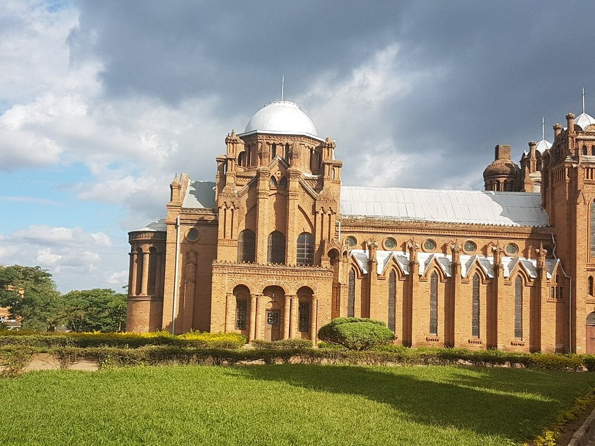
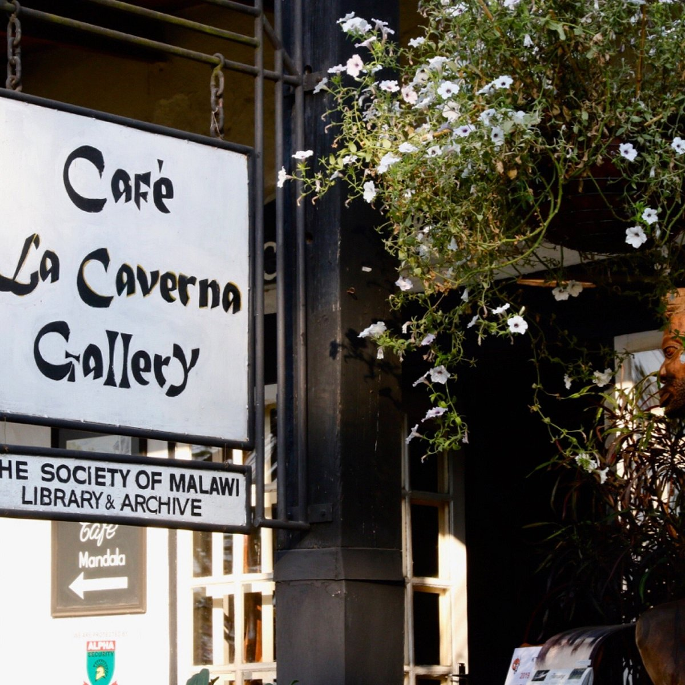

Top three activities to do in Blantyre

Visit St. Micheals and All Angels Church
It was constructed from 1888 to 1891 of brick at the Blantyre Mission in Blantyre, Malawi. It is located on the original Scottish mission site, off Chileka Rd, and is in the Church of Central Africa, Presbyterian’s Blantyre Synod.

Appreciate art at La Caverna Art Gallery
A quaint building in a scenic setting surrounded by trees and nature, the gallery houses a range of locally produced artworks, including landscape paintings, wood carvings of animals, rock carvings, ceramics, and traditional musical instruments.

Play golf at Blantyre Sports Club
A great place to work up a sweat or keep the kids amused. Blantyre Sports Club has a restaurant, bar pool, gym, tennis, squash and a nine-hole golf course.